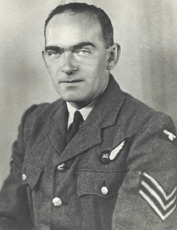

Introduction
This website has been created as a tribute to Sergeant David Williams who lost his life during World War II.
The story behind this tragic loss of lives has been captured in perhaps, more detail than others. On the website can be found original documentation from David's time in the Royal Air Force, details about the other members of the crew and also some useful links to other information.
Last, but not least, please refer to the Acknowledgements page which importantly lists some dedicated people who have spent many years researching and documenting the history of these and other brave people.